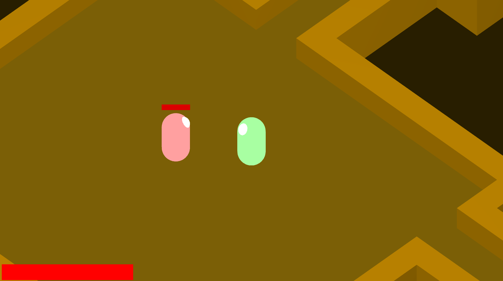
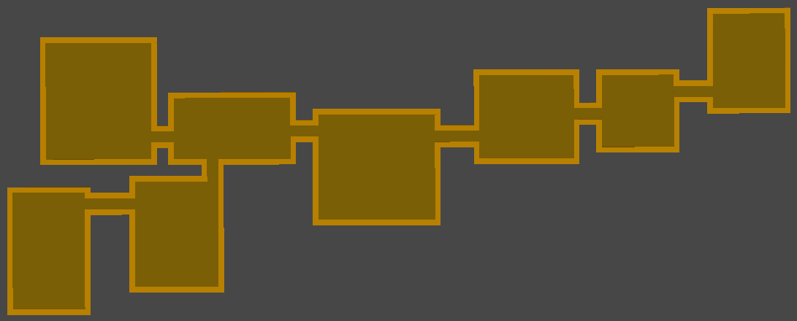
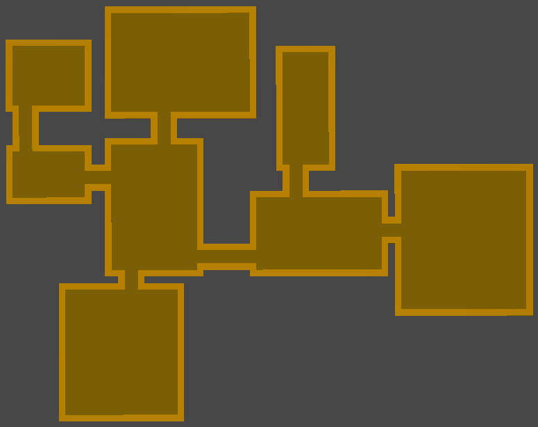
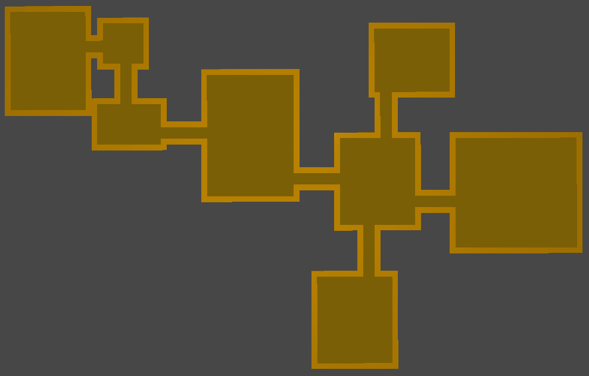

Mercy
GitHub: Mercy
Mercy is an isometric, technically dimetric, dungeon crawler that is procedurally generated. It was made in 10 weeks to expiriment with procedural generation, and I think the result was great. The gameplay is very basic but I might revisit this project in the future, probably in my game engine.



